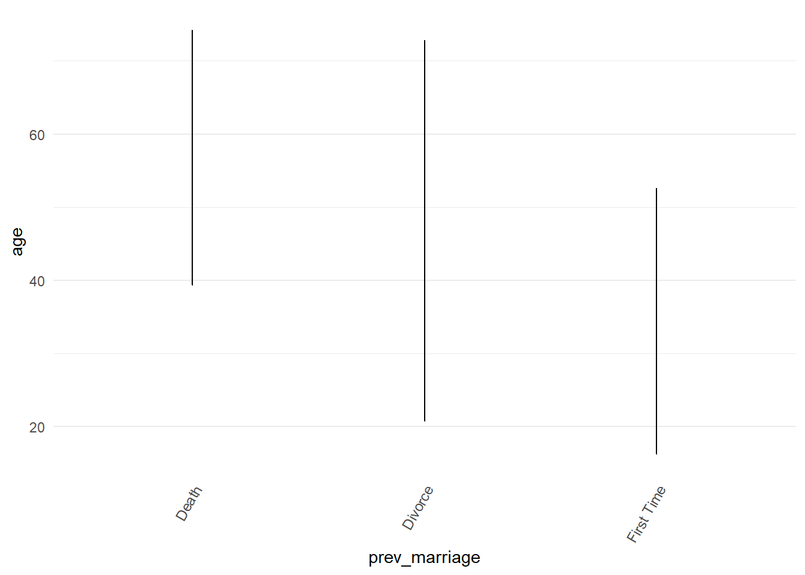
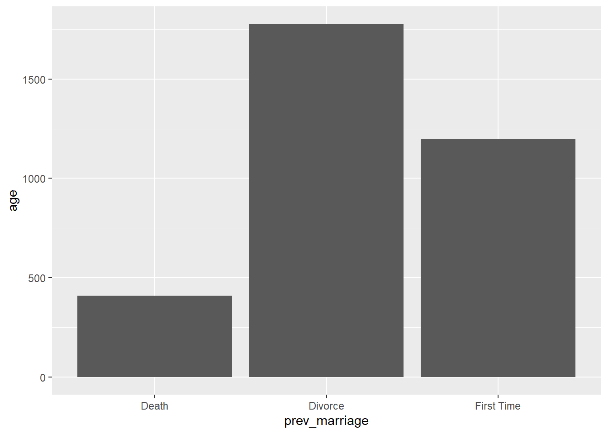
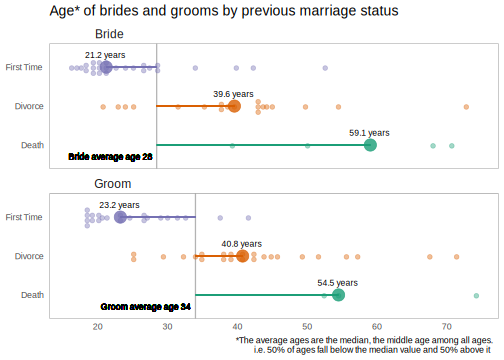

Chapter 4 Why start with geom_point() ?
4.1 ggplot is famed for annoying errors
It’s a good idea to start with ggplot2::geom_point() because it works for for both raw and summarised data straight away. This both speeds up everyone’s EDA and makes ggplot less intimidating for beginners. It is famed for easily triggering errors that can confuse you. So much so that one of the maintainers of ggplot asked people on Twitter what their most common ggplot error was.
To show you some classic errors let’s explore more granular data where each row describes a person getting married. We just do a little data cleaning on the marriage date a column on whether they were married before.
marriage <-
mosaicData::Marriage %>%
tidylog::mutate(prev_marriage = as.character(prevconc)) %>%
tidylog::mutate(prev_marriage = case_when(
is.na(prev_marriage) ~ "First Time",
TRUE ~ prev_marriage
)) %>%
tidylog::mutate(ceremonydate1 = lubridate::parse_date_time(ceremonydate, "mdy"))## mutate: new variable 'prev_marriage' with 3 unique values and 49% NA## mutate: changed 48 values (49%) of 'prev_marriage' (48 fewer NA)## mutate: new variable 'ceremonydate1' with 49 unique values and 0% NAkableExtra::kable(utils::head(marriage %>%
dplyr::select(ceremonydate1, person, prev_marriage, age, race, sign)))| ceremonydate1 | person | prev_marriage | age | race | sign |
|---|---|---|---|---|---|
| 1996-11-09 | Groom | First Time | 32.60274 | White | Aries |
| 1996-11-12 | Groom | Divorce | 32.29041 | White | Leo |
| 1996-11-27 | Groom | Divorce | 34.79178 | Hispanic | Pisces |
| 1996-12-07 | Groom | Divorce | 40.57808 | Black | Gemini |
| 1996-12-14 | Groom | First Time | 30.02192 | White | Saggitarius |
| 1996-12-26 | Groom | First Time | 26.86301 | White | Pisces |
In our previous data set we had one value per city and date so geom_line worked fine as long as the date and the city were in the “aesthetics” of the plot (e.g. x,y, colour, category, or facet being the most common).
A common way to trigger ggplot2 errors or create confusing plots is using bar or line charts before the data is summarised.
For example, a line chart is inappropriate with many ages per previous marriage status.

- And here using a bar chart instead returns an error.
## Error: stat_count() must not be used with a y aesthetic.- ggplot2::geom_col() or ggplot2::geom_bar(stat = “identity”) will plot the data for us but it’s showing the sum of all the ages in each group which doesn’t really mean much.
marriage %>%
ggplot2::ggplot() +
ggplot2::aes(
x = prev_marriage,
y = age
) +
ggplot2::geom_bar(stat = "identity")
A column may end up being the final plot choice, but for fast EDA let’s avoid bars, lines and columns and retreat to our friend geom_point()
Another reason to avoid bars to begin with is they do a statistical transformation without us realising it. This is well explained in the Statistical Transformatoins chapter of R for Data Science
4.2 Retreat to geom_point()
- Here we go back to using ggplot2::geom_point() and facet by person
marriage %>%
ggplot2::ggplot() +
ggplot2::aes(
x = prev_marriage,
y = age
) +
ggplot2::facet_wrap(~person) +
ggplot2::geom_point(alpha = 0.3)
Immediately this is interesting as we see the ages of brides and grooms and what if they are getting married for the first time or if they are divorced or widowed.
We can then experiment with different ways of showing these distributions. Hadley Wickham’s ggplot2: Elegant Graphics for Data Analysis has a good short chapter on displaying distributions
First let’s try a histogram.
marriage %>%
ggplot2::ggplot() +
ggplot2::aes(x = age) +
ggplot2::facet_wrap(~ person +
prev_marriage) +
ggplot2::geom_histogram()## `stat_bin()` using `bins = 30`. Pick better value with `binwidth`.- We get a warning. We can set the bin width by hand, say 6 bins.
marriage %>%
ggplot2::ggplot() +
ggplot2::aes(x = age) +
ggplot2::facet_wrap(~ person +
prev_marriage) +
ggplot2::geom_histogram(bins = "6")
This looks better but is there an optimum bin number? There is probably no “optimum” as this exchange discusses.
Or we might try the density distribution with ggplot2::geom_density()
p <-
marriage %>%
ggplot2::ggplot() +
ggplot2::aes(
x = age,
fill = prev_marriage
) +
ggplot2::geom_density(adjust = 1,
alpha = 0.5,
colour = NA) +
ggplot2::facet_wrap(vars(person),
ncol = 1) +
ggplot2::theme_minimal()
directlabels::direct.label(p, list("top.points", cex = .75, hjust = 0, vjust = -0.2))4.3 geom_point() and geom_boxplot() is better
- But with so few data points ggplot2::box_plot() with the data points overlaid with ggplot2::geom_jitter() works well.
4.4 Final choice: geom_jitter() and stat_summary()
Until recently the chart above would have been my final plot. Until I saw the fantastic “evolution of a ggplot” post.
In the gif below you can see they also start with a boxplot but the final choices is ggplot2::geom_jitter() and ggplot2::stat_summary(). The post gives the full code in a gradual story like the ggplot flip books.

- And here is the final plot.

- Inspired by that plot and its code this final plot is much more engaging than he boxplot because it tells a story far more clearly with no explanation needed.

p <- marriage %>%
dplyr::group_by(person,prev_marriage) %>%
dplyr::mutate(pers_prev_avg = median(age)) %>%
dplyr::ungroup() %>%
dplyr::group_by(person) %>%
dplyr::mutate(pers_avg = median(age)) %>%
dplyr::ungroup() %>%
ggplot2::ggplot() +
ggplot2::aes(
x = prev_marriage,
y = age,
colour = prev_marriage
) +
ggplot2::facet_wrap(~person, ncol = 1) +
ggplot2::stat_summary(fun.y = median,
geom = "point",
size = 4,
alpha = 0.8) +
ggplot2::stat_summary(aes(label= paste( round(..y..,1),
" years")),
fun.y=median,
colour = "black",
geom="text",
size=3,
vjust = -1.5) +
ggplot2::geom_hline(aes(yintercept = pers_avg),
color = "gray70",
size = 0.6) +
ggplot2::geom_text(aes(x = 0.7,
y = pers_avg,
label = paste(person," average age", round(pers_avg,0)),
#colour = "white",
hjust = 1.05),
colour = "black",
size = 3) +
ggplot2::geom_segment(aes(x = prev_marriage,
xend = prev_marriage,
y = pers_avg,
yend = pers_prev_avg),
size = 0.8) +
ggplot2::geom_jitter(size = 2,
alpha = 0.4,
width = 0.2) +
ggplot2::scale_color_brewer(type = "qual",
palette = "Dark2") +
ggplot2::theme_minimal()+
ggplot2::theme(
plot.title = element_text(size = 14,
hjust = 0),
legend.position = "none",
axis.title.x = element_blank(),
axis.title.y = element_blank(),
panel.grid = element_blank(),
strip.text.x = element_text(size = 12,
hjust = 0.1),
panel.border = element_rect(colour = "black",
fill=NA,
size = 0.1)
) +
ggplot2::scale_y_continuous(breaks=base::seq(0,100,10)) +
ggplot2::coord_flip() +
ggplot2::labs(
title = "Average median* age by previous marriage status",
caption = "*The median is the middle age among all ages when sorted in order so that 50% of ages fall below that value and 50% above it"
)
ggplot2::ggsave(file="marriage.svg",
device = "svg",
plot=p)## Saving 7 x 5 in image